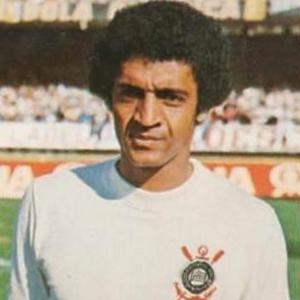
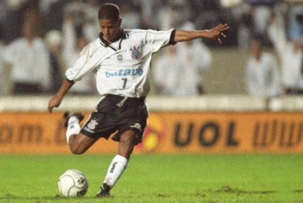
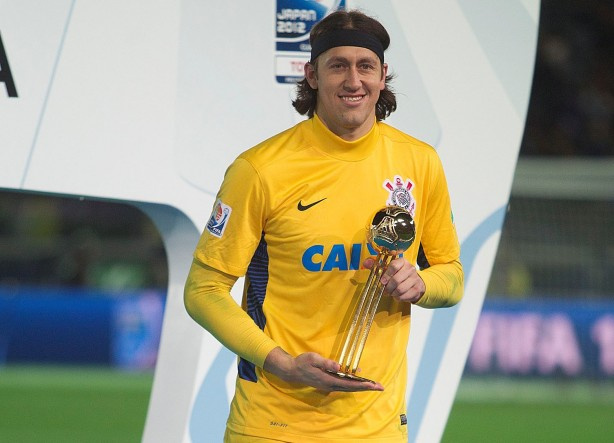

Em 1º de setembro de 1910 um grupo de operários do bairro do Bom Retiro, localizado em São Paulo, inspirados na passagem de um time Inglês pelo Brasil,
denominado Corinthian Football Club, criaram o Sport Club Corinthians Paulista. Mesmo sendo hoje um time multiesportivo, tendo equipes em outras modalidades como a Natação, Basquete, Remo, Futsal, Handebol, Futebol Americano, Futebol de Areia,
MMA e Rugby, as maiores conquistas do clube vieram através do futebol.
A equipe, que desde a fundação foi formada por pessoas mais carentes da sociedade, aos poucos ficou reconhecida
como time do povo. O clube foi um dos pioneiros a aceitar atletas negros em seu elenco. Seu primeiro presidente, o Alfaiate Miguel Battaglia,
afirmou desde o início que o Corinthians seria o time do povo.
O primeiro campo veio improvisado de um terreno alugado na Rua José Paulino, que posteriormente foi plainado e virou campo. O time, que na época era
considerado de várzea, em 1913 ganhou a primeira oportunidade de disputar o Campeonato Paulista, mas não obteve êxito, ficou em quarto lugar entre cinco equipes. No ano seguinte conquistou
seu primeiro título, o Campeonato Paulista de 1914, de forma invicta com 10 vitórias em 10 jogos.
As décadas de 20 e 40 foram emblemáticas, no período o clube levou nove títulos paulistas, firmando-se como uma das equipes mais importantes de São Paulo e rivalizando assim com Societá Sportiva Palestra Itália, atual Palmeiras.
Os anos seguintes foram de altos e baixos até 1961, quando o time entrou em crise e passou 22 anos sem títulos oficiais. O jejum terminou em 13 de outubro de 1977 com o título paulista, quando Basílio,
aos 36 minutos do segundo tempo, fez o gol da vitória contra a Ponte Preta, fazendo daquele um dos títulos mais importantes para o time.
Ídolos do clube

Basílio
O escolhido. O pé de anjo. O autor do gol mais comemorado da história. O redentor de uma nação. Ou simplesmente Basílio. O camisa 8 que alegrou toda uma nação!
Vindo da Portuguesa, Basílio chegou ao Corinthians em 1975 com a dura missão de substituir ninguém menos que Rivelino, que havia se transferido para o Fluminense.
Mal sabia esse paulistano que seria ele o autor do gol mais comemorado da história do futebol mundial.
O gol do título na final do campeonato paulista de 1977,
que colocou fim ao jejum de títulos que se arrastava desde 1954 (exatos 22 anos, 8 meses e 7 dias).
Basílio nunca foi um jogador de técnica apurada, grandes jogadas de efeito ou alguma outra virtude que o fizesse merecer uma convocação pra seleção brasileira.
Mas aquele gol marcado no dia 13 de outubro de 1977 no terceiro jogo das finais do campeonato paulista contra a Ponte Preta fez com que ele entrasse definitivamente para a história
como um dos maiores nomes do Corinthians sendo lembrado e festejado até os dias de hoje.
Graças a esse gol Basílio foi apelidado pela fiel de "Pé de Anjo".
Basílio, ao comentar esse gol, diz que se "sente um escolhido de Deus, já que antes do seu chute a bola tinha sobrado para Vaguinho e Wladimir".
Ganhou ainda, em cima da mesma Ponte Preta, o título paulista de 1979.
Alguns anos antes disso, mais precisamente em 1975 num jogo contra o América de São José do Rio Preto, ao se chocar com o goleiro do time adversário Basílio sofreu uma parada
respiratória e teve que ser reanimado pelo doutor Osmar de Oliveira. Se não fosse a competência do médico a fiel poderia ter perdido ali aquele que seria, dois anos depois, o herói
de uma nação ao marcar o tão festejado gol.
Após sua passagem pelo Corinthians encerrou a carreira no Taubaté e virou treinador. Teve quatro passagens pelo Corinthians, sendo a primeira em um só jogo como interino no ano de 1985.
A segunda passagem foi em 1987, interinamente após a demissão de Jorge Vieira. Entre 1989 e 1990 assumiu o cargo efetivamente, assim como em sua quarta passagem em 1992.
Neto
José Ferreira Neto, conhecido por Neto (Santo Antônio de Posse-SP, nove de setembro de 1966), é um ex-jogador de futebol que atuava como meia.
Neto fez sua primeira passagem pelo Corinthians entre meados de 1989 e 1993. Campeão brasileiro em 1990, Neto marcou nove dos 23 gols alvinegros no torneio, sendo cinco deles de falta, e foi peça importante, principalmente, na reta final do torneio. Neto era ótimo lançador, tinha bons chutes, principalmente com a perna esquerda, e foi um dos melhores cobradores de falta do país.
Em uma saída conturbada do Corinthians em 1993, Neto foi para o Millonários, da Colômbia, e depois tentou passagens por Santos, Atlético-MG, Matsuraba-PR, Guarani e Araçatuba. De volta ao Corinthians no final 1996, foi campeão paulista com o Timão no ano seguinte.
Se aposentou em 1999. Atualmente, é comentarista esportivo da Rede Bandeirantes.

Marcelinho Carioca
Marcelo Pereira Surcin, mais conhecido como Marcelinho Carioca, é um dos grandes ídolos da história do Corinthians. Nascido no Rio de Janeiro, no dia 31 de dezembro de 1971,
o ex-jogador atuou como meia e foi apelidado pela Fiel como “Pé-de-Anjo”, devido a sua enorme habilidade em cobranças de falta.
O ídolo, que definiu o manto alvinegro como sua "segunda pele", é o maior vencedor de títulos pelo Timão.
Contratado na temporada de 1994, junto ao Flamengo, Marcelinho Carioca
rapidamente conquistou a torcida a partir de suas atuações.
Tamanha identificação do meia com a Fiel e com o próprio Corinthians rendeu três passagens pelo clube. Em sua primeira, o Pé de Anjo atuou pelo Timão de 1994 até 1997.
O período fora do Corinthians durou pouco e, em 1998, o craque retornou e ficou até 2001. A terceira e última passagem do camisa 7 aconteceu entre 2006 e 2007, marcada por eterna gratidão à Fiel.
Pelo Timão, Marcelinho atou em 423 partidas entre 1994 e 2001, com 224 gols com a camisa alvinegra em sua conta. Ele é o jogador que mais levantou taças no Corinthians, com um total de dez
campeonatos conquistados durante a sua trajetória. Entre eles, o ex-meia conquistou os Campeonatos Brasileiros de 1998 e 1999, além do primeiro título do Mundial de Clubes da equipe do Parque São Jorge, em 2000.
Como adversário, nas vezes em que enfrentou o Timão defendendo o Santo André e Brasiliense, o craque fez questão de saudar a Fiel de perto no Pacaembu, que retribuía o carinho e contemplava a relação de carinho.
Quinto maior artilheiro do Corinthians e 13ª jogador que mais entrou em campo na história, Marcelinho marcou 206 gols em 433 jogos disputados.

Cássio
Cássio Ramos, mais conhecido como Cássio, é um goleiro do Corinthians. Ele nasceu em Veranópolis, no Rio Grande do Sul, no dia 6 de junho de 1987. O arqueiro chegou ao Timão no final de 2011.
Cássio começou sua carreira no Grêmio em 2005, onde foi convocado para as seleções de base. Com apenas 20 anos, se transferiu para o PSV, da Holanda. Permaneceu cinco anos no futebol europeu sem nunca conseguir alcançar a titularidade.
Assim, no final 2011, após uma rescisão amigável, decidiu retornar ao futebol brasileiro.
Ele chegou ao Timão com bastante desconfiança para ser apenas uma opção para o banco de reservas. No entanto, com o desempenho abaixo do esperado do então titular Júlio César, Cássio fez sua estreia com a camisa corintiana no Paulista e agarrou a oportunidade.
Se tornou titular da equipe e logo em seu primeiro jogo pela Copa Libertadores foi eleito o melhor em campo.
Foi fundamental para a conquista do Corinthians na competição continental, sendo decisivo nas partidas finais com ótimas defesas - a principal delas, em um chute cara a cara contra Diego Souza pelas quartas de final.
No Mundial de Clubes, Cássio foi novamente um dos destaques da equipe com grandes defesas contra o Chelsea.
As boas atuações e os títulos importantes levaram o goleiro à Seleção Brasileira e a condição de ídolo da torcida corintiana.
No dia 2 de março de 2019, se isolou como o segundo goleiro com mais jogos com a camisa do Corinthians. Cássio disputou a sua partida de número 396 contra o São Bento, passando Gylmar dos Santos Neves e ficando atrás apenas de Ronaldo Giovanelli.